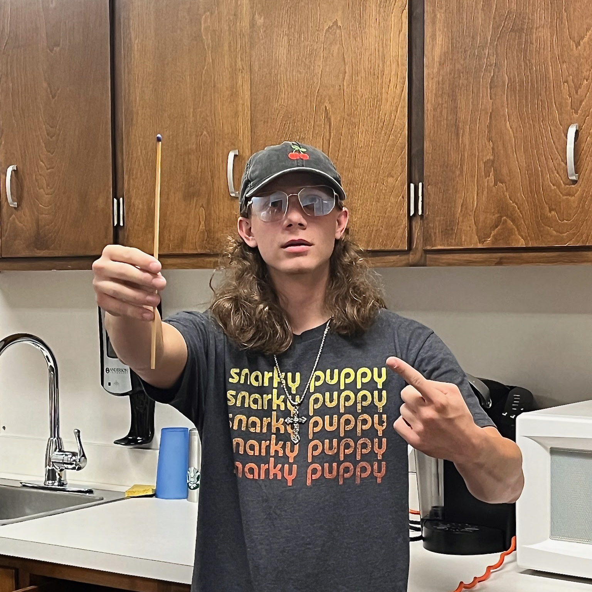
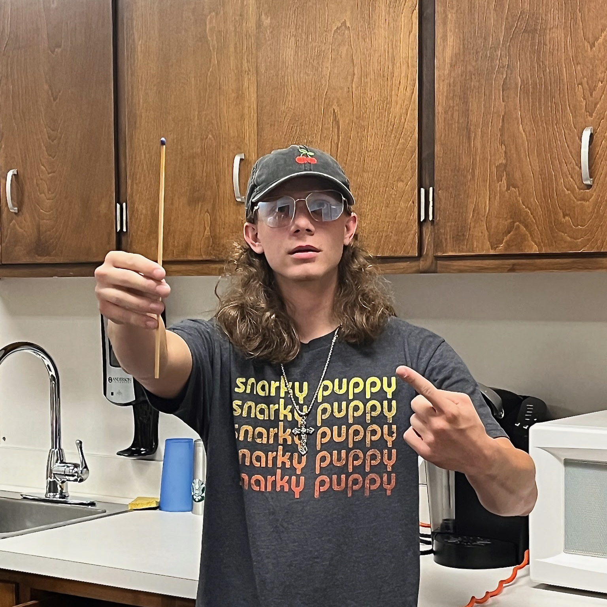
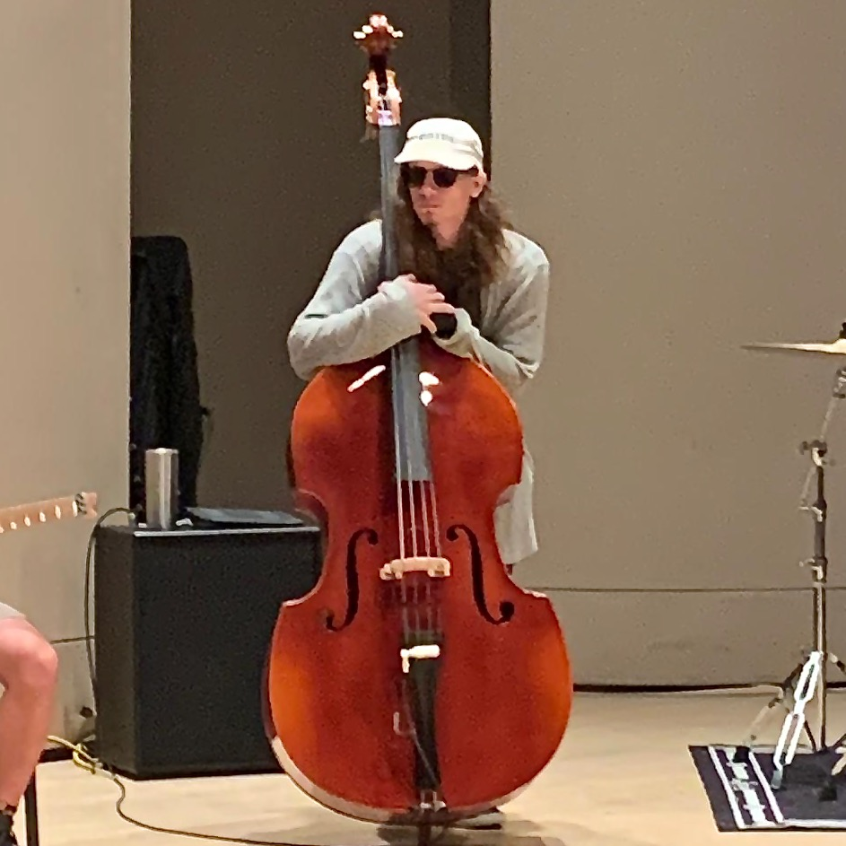
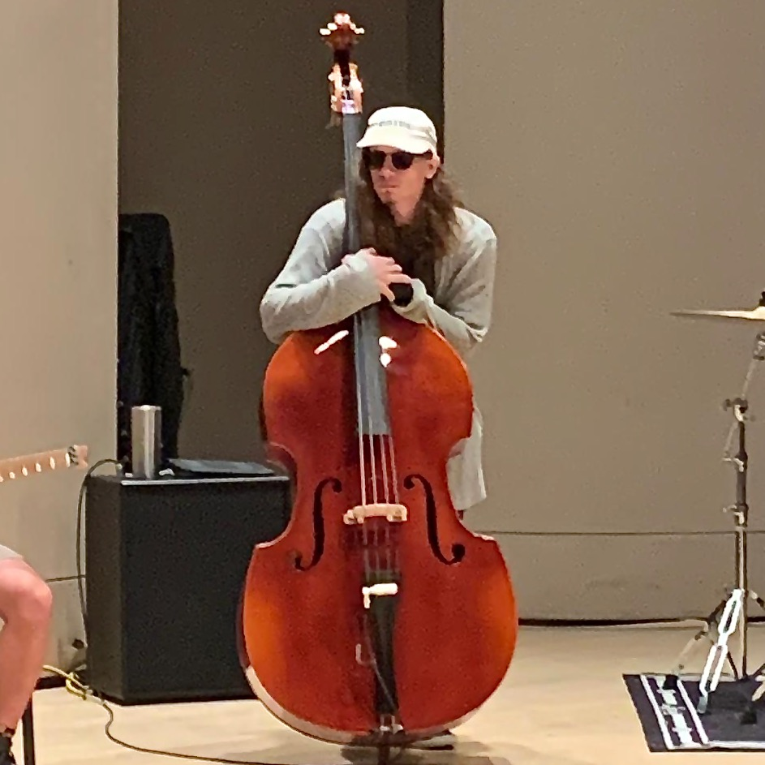

Benji Stiles
Is a third year commercial music major at Anderson University in South Carolina. After being raised in New Jersey, he moved to Anderson with his family. While his primary instrument focus is jazz and commercial bass–electric and upright–he also has experience performing on drumset and orchestral percussion in multiple concerts and performances. He also does frequent work with sound engineering and audio technology. He’s the technical co-director for AUthenticity, the premiere scholarship band at Anderson University. Additionally, he co-hosted a radio show at the local radio station WSBF-FM in Clemson, South Carolina from 2016 to 2020. He additionally has experience touring, doing a 10-day tour in 2023 selling merch for the group Further Seems Forever. In the annual Anderson Soiree outdoor festival, he's performed on drums and electric bass, as well as mixing front of house. He is a member of the Anderson Symphony Orchestra and the Anderson University Wind Ensemble. He’s performed multiple times with each group, including orchestra showcases in the 2022 and 2023 President’s Gala at Anderson University. Most recently, some notable achievements include being selected for the AU Jazz Combo and as a student leader for one of the university commercial ensembles. Over the summer, he performed a jazz showcase for Fine Arts Day and taught a percussion clinic at Riverside Middle School in Pendleton SC.
MEDIA

 

 

CONTACT
Email: ben.stiles1228@gmail.com